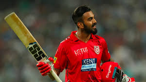
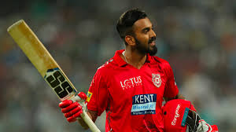

My favourite hobby is playing Cricket!
Let me tell you something about cricket!
Cricket is a bat-and-ball game played between two teams of eleven players on a field at the centre of which is a 22-yard (20-metre) pitch with a wicket at each end, each comprising two bails balanced on three stumps. The game proceeds when a player on the fielding team, called the bowler, "bowls" (propels) the ball from one end of the pitch towards the wicket at the other end. The batting side's players score runs by striking the bowled ball with a bat and running between the wickets, while the bowling side tries to prevent this by keeping the ball within the field and getting it to either wicket, and dismiss each batter (so they are "out"). Means of dismissal include being bowled, when the ball hits the stumps and dislodges the bails, and by the fielding side either catching a hit ball before it touches the ground, or hitting a wicket with the ball before a batter can cross the crease line in front of the wicket to complete a run. When ten batters have been dismissed, the innings ends and the teams swap roles. The game is adjudicated by two umpires, aided by a third umpire and match referee in international matches.
VIDEOS
LATEST NEWS

MY INSPIRATIONS
 
